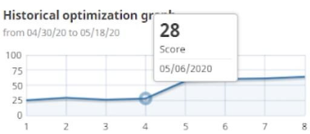
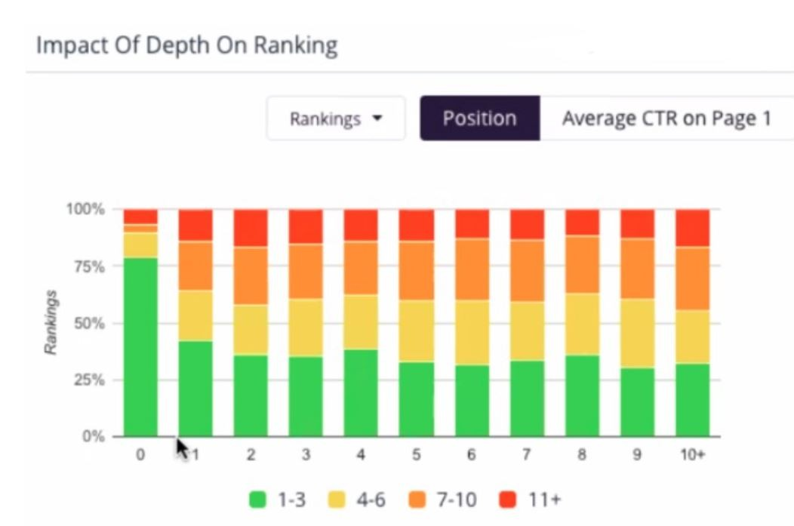
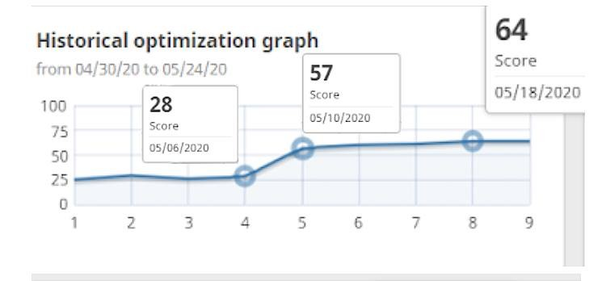
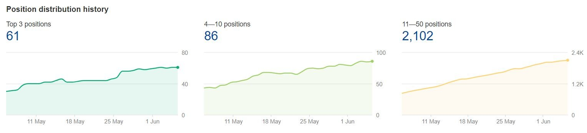

How I Improved A Client's Technical SEO By 228%
I recently had a client, Henry Harvin who had a HUGE website, and by huge, I mean having more than 4800 webpages! Most of the pages were various course pages and blog pages. Having a good Technical SEO becomes very important for websites with such a large number of webpages, and can cause serious losses in traffic and rankings if it is not structured properly.
As I embarked upon the task on 6th May 2020, this website’s Seobility Technical Score was only 28!
This implied that the site had severe technical issues. Due to these technical issues, many pages of the website were not being crawled completely.
Why?#
Since there are over a trillion pages on the web, Google tries to prioritize crawling of properly structured websites and neglects pages with poor technical SEO scores and structure. This does not have much impact on small or medium-sized websites with less than 40-50 webpages, but poses major problems in crawling of large websites with over 100 webpages like my client had.
The Problem#
A huge number of pages on my client’s website were either not getting crawled, or getting crawled, but not getting indexed. Since these pages won’t be added to Google’s Index, they won’t be able to earn rankings or traffic through organic search and were also receiving a poor Relative PageRank score.
The poor PageRank on these pages from Google was bringing the OnPage and Content SEO scores and hence rankings of the ENTIRE website down!
The whole website was also losing valuable organic traffic since its content (no matter how good) was not able to rank up to its full potential.
So How Did I Proceed?#
- The initial step was to extract the URL profile and structure of the website.
(Screaming Frog is a good tool for this, but it scans only first 500 pages free, and thereafter costs~ £149.00 annually).
- So I studied Screaming Frog’s functionalities and coded a similar customized Technical SEO tool in Python from scratch myself. (YES, I CODE too!!!)
- Using this tool, I mapped the website’s entire lineage chart.
- The URL profile revealed that the site’s average page depth was around 5.9! – This needed to be addressed immediately.
- So I worked around the structural aspects, re-aligned the website structure and URL profile to bring the average Page Depth to 3.8!
Result#
And in just 4 days, the Seobility Technical SEO Score of the website jumped up from 28 to 57!!!
This SINGLE change also set the website to slowly improve over time as Google now started properly indexing and crawling these page. The Technical SEO Scores automatically increased up to 64 after days. There were also major ranking improvements for the entire website since more of its content started getting indexed and ranked by Google!
The Technical SEO scores from 6th May to 18th May 2020:

With this drastic change in Technical SEO, many previously unranked pages of the website started getting indexed, and the rank for many already ranking pages improved by huge margins.

FYI:#
What Is Page Depth?#
Page Depth (also called Click Depth) is an essential factor in Google’s Relative PageRank algorithm, and pages buried deeper lose a lot of PageRank. PageRank drops by approximately 1 unit for every single level deeper a webpage is. In simpler words, if it takes more clicks for you to reach it, it means it wasnt as important in the first place…
And since Google’s PageRank algorithm works on an inverse logarithmic rule, so a change of one-page depth translates to a loginverse(1)=10 times increase. So for example if the root domain (www. site. com) has a PageRank of 7, then Page Depth 1 (www. site. com/page1) will have a PageRank of 6 and (www. site. com/page1/page2) will have a PageRank of 5.
PageRank usually becomes NIL after a Page Depth of 5, so it is recommended to adjust your website structure accordingly.
Here’s a video of John Mueller addressing the importance of a proper website structure and Technical SEO.
Liked this blog? Read more of my blogs below👇. And please leave a like!